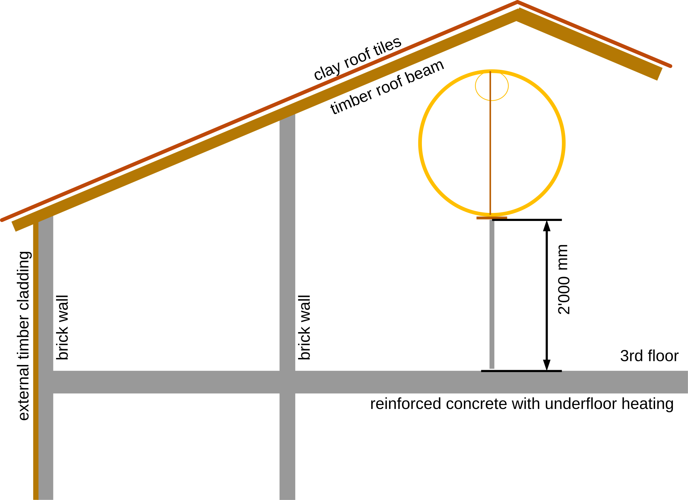
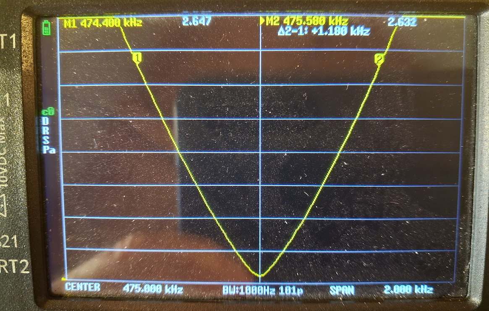
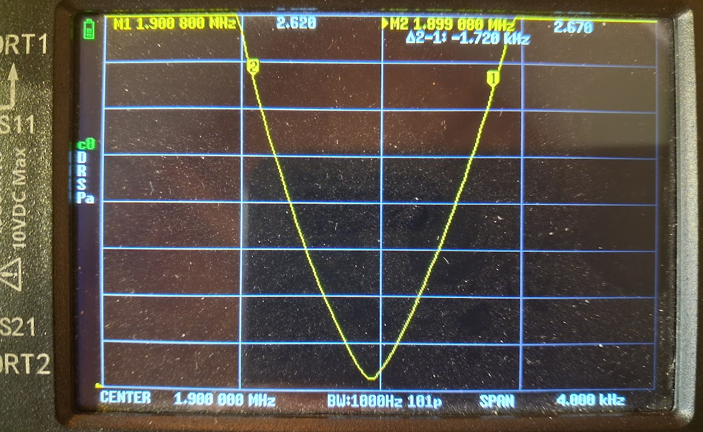
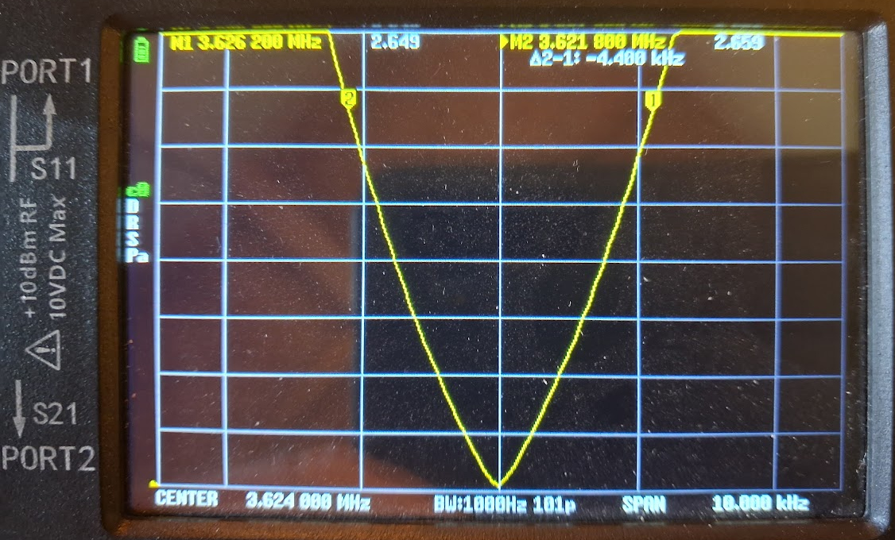
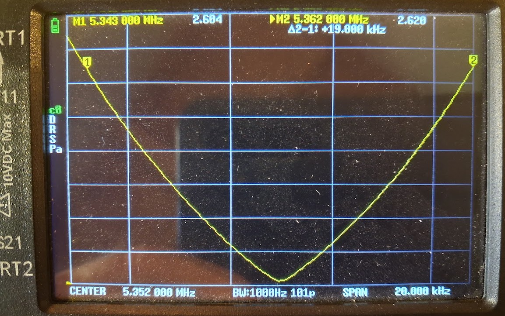
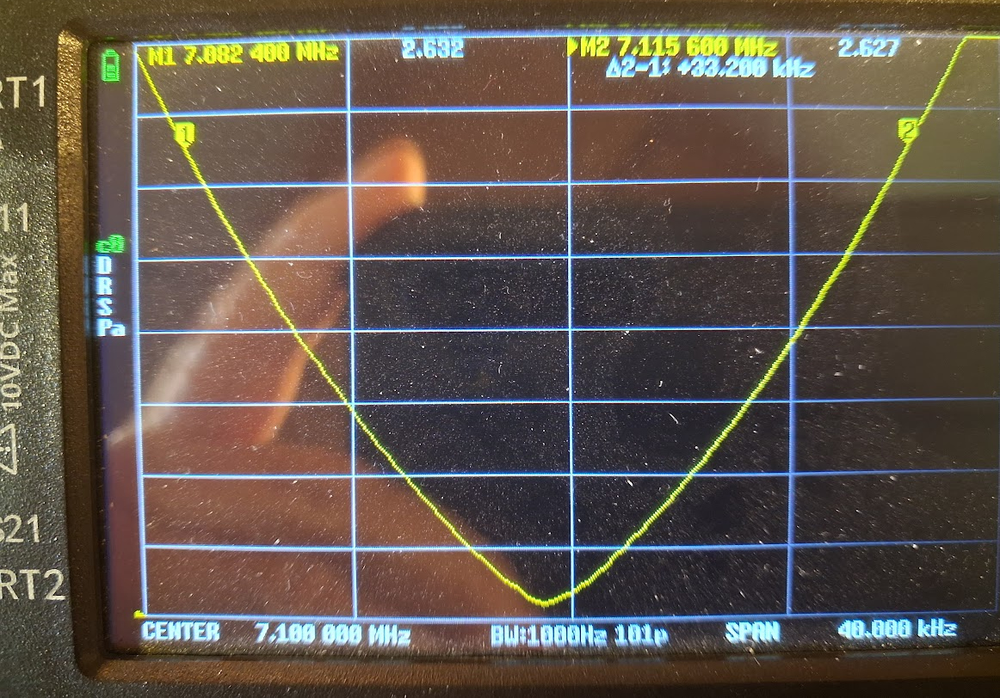
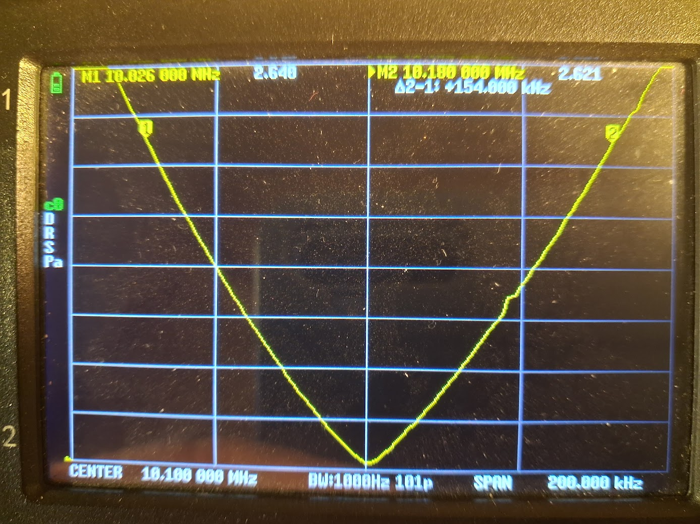

Info: Mag loop made of Heliax 1-1/4 and variable vacuum capacitor.
Conductor: Heliax 1-1/4 corrugated coaxial cable. Approx. 36 mm outer diameter.
Capacitor: Variable vacuum capacitor 500 pF (Comet). For the 160 m band, two additional fixed-value vacuum capacitors are switched in.
Environment: Indoor, 3rd floor.
Thanks: Many thanks to Toni for sharing the measurement results and for the lively discussions on efficiency.
| Band | 160m | 80m | 60m | 40m | 30m | |
| Frequency f | MHz | 1.900 | 3.624 | 5.362 | 7.100 | 10.100 |
| Intrinsic bandwidth Bint | kHz | 1.7 | 4.4 | 19.0 | 33.2 | 154.0 |
| Source of Bint | SWR = 2.62 | |||||
| Loop diameter D | m | 1.900 | ||||
| Conductor diameter d | m | 0.036 | ||||
| Loop count n | 1 | 1 | ||||
| Inductance L | H | 4.83e-06 | ||||
| Capacitance C | pF | 1453 | 399 | 182 | 104 | 51.4 |
| Unloaded Q0 | 1 | 1105 | 824 | 282 | 214 | 66 |
| Damping resistance RT | Ohm | 0.0522 | 0.134 | 0.577 | 1.007 | 4.673 |
| Radiation resistance RR | Ohm | 0.000405 | 0.00536 | 0.0258 | 0.0796 | 0.329 |
| Loss resistance RLoss | Ohm | 0.0518 | 0.128 | 0.551 | 0.928 | 4.344 |
| Power to antenna Pfwd | W | 200 | 200 | 200 | 200 | 200 |
| swr_min_ant | 1 | 1.00 | 1.00 | 1.00 | 1.00 | 1.00 |
| etaSWR_ant | % | 100 | 100 | 100 | 100 | 100 |
| Power antenna load Pload | W | 200 | 200 | 200 | 200 | 200 |
| Antenna efficiency η | % | 0.775 | 4.02 | 4.47 | 7.90 | 7.05 |
| Loop current I rms | A | 61.90 | 38.70 | 18.62 | 14.09 | 6.54 |
| Loop voltage Uloop rms | V | 3569 | 4256 | 3030 | 3036 | 2005 |
| Magnetic dipole moment m | A m² | 175.511 | 109.734 | 52.807 | 39.948 | 18.548 |
| Link to calculator | calculator | calculator | calculator | calculator | calculator | |

The SWR of the antenna was measured with a NanoVNA. The intrinsic bandwidth B_int is estimated to equal the B_SWR = 2.62 shown in the images below.






Toni reports that the STL works well for NVIS contacts. Due to the surrounding mountains, low-angle radiation is limited.
Even on 160 m, SSB contacts as far as Paris or Berlin are not uncommon.
On 160 m, the SSB bandwidth is reduced to 1.5 kHz.
The STL performs similarly to an OCF dipole of 16 m length installed under the ridge of the chalet roof.
Many thanks to Toni for sharing the measurement results. It is a pleasure to be able to publish them here — even if Toni does not fully agree with the efficiency calculation approach used on this page.
Overview of all Antennas with filter/selection: compare page
Overview of all Antennas static: static compare page
2026 Peter Märki (HB9ISP). This project is created in my free time and has no commercial background. Provided without warranty of any kind. Feedback is welcome.